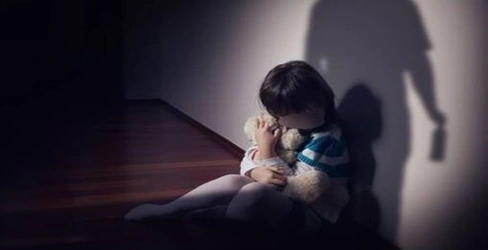

nadie debe lastimarte.
¡rompe el silencio!
Si vives con miedo, no estás solo. La violencia no es normal, y no tienes que soportarla. Nadie tiene derecho a lastimarte.

¿Qué puedes hacer si vives con abuso?
Habla con un adulto de confianza: un maestro, un familiar o un amigo cercano. Recuerd a que tus sentimientos son importantes. Mereces ser escuchado. No importa lo que te digan, tú NO eres el culpable de la violencia.
Recursos:Línea Nacional contra la Violencia: 112
La violencia no es normal, y no tienes que soportarla. Nadie tiene derecho a lastimarte."